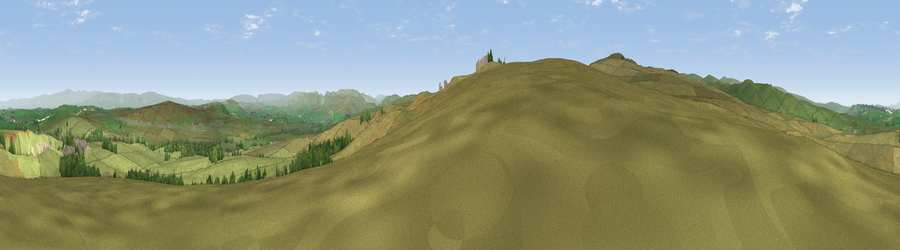

Viewpoint near Keld
#10515 in England · top 43% of its area beats it · near KeldThe view, rendered

A 360° render of this exact spot computed from the terrain model, tree cover and land cover — summer colours, afternoon light, calibrated against photographs of famous viewpoints. Real trees, hedges and buildings will differ in detail.
The panorama
Grey silhouette: terrain skyline in each direction (720 bearings, Earth curvature and refraction included). Dashed green: skyline with trees (+15 m) and buildings (+8 m) as obstacles. Blue strip: how far the ground is visible on each bearing.
Where the view opens
Wedge length = distance to the farthest visible ground on that bearing (vegetation-aware). Rings at 10, 25 and 50 km.
What fills the view
89% grassland · 8% woodland · 1% built-up ·
Angular shares of the visible panorama (visual magnitude), not map area. Landscape diversity 0.18 (0–1 Shannon).
Key numbers
More beautiful places nearby
The staircase of upgrades: each row has a higher view potential than everything closer. Driving times are estimates from straight-line distance, calibrated against real road routing — check an actual route before setting out.
| Place | Direction | Drive | Score |
|---|---|---|---|
| Long Fell | SSW · 1 km | ~3 min | 72.4 |
| Viewpoint near Sadgill | WSW · 3 km | ~8 min | 73.1 |
| Viewpoint near Sadgill | WSW · 4 km | ~9 min | 75.7 |
| Ashstead Fell | S · 7 km | ~14 min | 76.3 |
| Viewpoint near Garnett Bridge | SSW · 7 km | ~14 min | 77.6 |
| Kentmere Pike | W · 10 km | ~19 min | 78.7 |
| Viewpoint near Sadgill | W · 10 km | ~19 min | 79.7 |
| Viewpoint near Bampton | WNW · 10 km | ~20 min | 80.4 |
54.47916, -2.68018 · source: screening · position refined by local search. Computed location — check access rights before visiting.